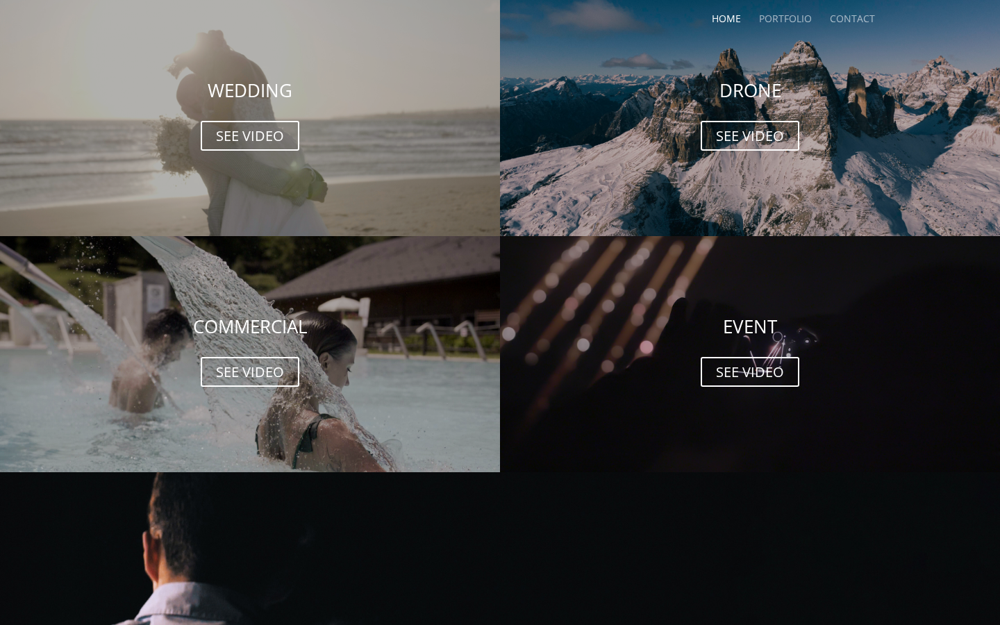
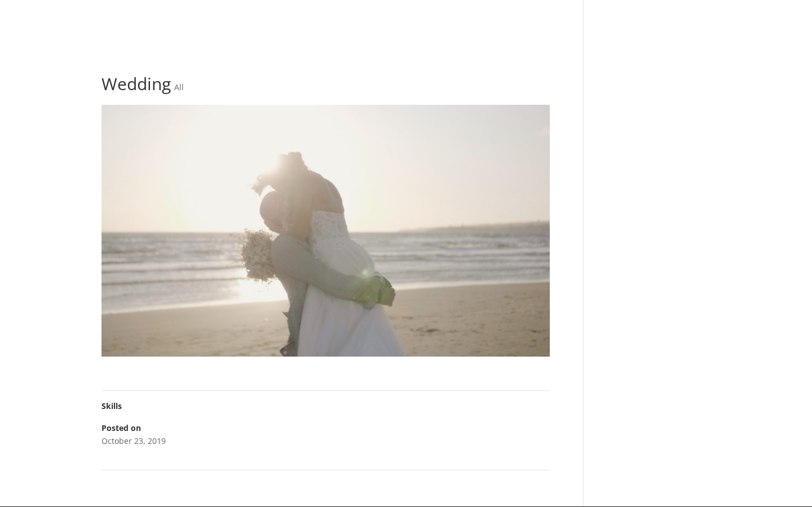
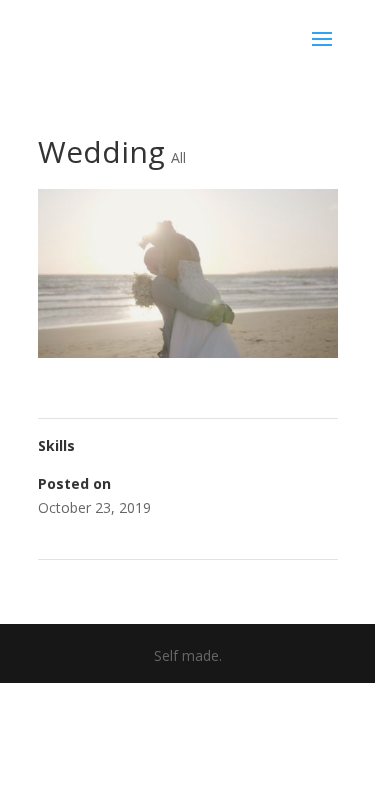

Il sito funziona correttamente sul nuovo server Tanuki (Hetzner). Tutte le pagine rispondono 200, nessuna immagine rotta su 61 immagini verificate, zero errori JavaScript in console, SSL valido. Unica nota: il TTFB della homepage è ~980ms, accettabile per WordPress con Elementor ma migliorabile con caching.
Il sito filippomarcodini.com è stato spostato da un server (Cloudways/Octopus) a un nuovo server (Hetzner/Tanuki). Abbiamo verificato che tutto funziona correttamente: la homepage si carica, le immagini si vedono, e il sito è raggiungibile sia da computer che da telefono.
La sezione portfolio con i lavori video si carica correttamente. Tutte le 61 immagini presenti nel sito vengono visualizzate senza errori. Anche la pagina interna "Wedding" funziona.


Il sito si adatta correttamente anche alla visualizzazione da telefono. Il layout responsive funziona, le immagini si ridimensionano e il contenuto è leggibile.

Il lucchetto nel browser funziona: la connessione al sito è sicura e protetta. Il certificato è valido fino ad aprile 2026 e si rinnova automaticamente.
La homepage impiega circa 1 secondo per iniziare a rispondere, e circa 23 secondi per caricare tutti i contenuti (immagini, video, elementi grafici). Questo è normale per un sito con molti contenuti multimediali e Elementor, ma si potrebbe migliorare con un sistema di cache.
| Campo | Valore |
|---|---|
| Dominio | filippomarcodini.com |
| Server precedente | Cloudways / Octopus |
| Server attuale | Hetzner / Tanuki (188.245.145.207) |
| PHP | 8.3.30 |
| CMS | WordPress + Elementor |
| CDN/Proxy | Cloudflare |
| Scenario | Post-deploy check |
| Verdict | MIGRAZIONE OK |
| Metrica | Valore | Stato |
|---|---|---|
| TTFB Homepage | 980ms | ACCETTABILE |
| TTFB Wedding | 461ms | OK |
| Full load Homepage (networkidle) | 23s | PESANTE |
| DNS Lookup | 2.7ms | OK |
| TLS Handshake | 28ms | OK |
| HTML Size | 47 KB | OK |
| Check | Risultato |
|---|---|
| Homepage HTTP 200 | PASS |
| Wedding page HTTP 200 | PASS |
| system-check.php = tanuki | PASS |
| Immagini rotte (su 61) | 0 — PASS |
| Errori JS console | 0 — PASS |
| Responsive mobile | PASS |
| Campo | Valore |
|---|---|
| Subject | CN=filippomarcodini.com |
| Issuer | Google Trust Services / WE1 |
| Valid from | 2026-01-11 |
| Valid until | 2026-04-11 |
| Stato | VALIDO |